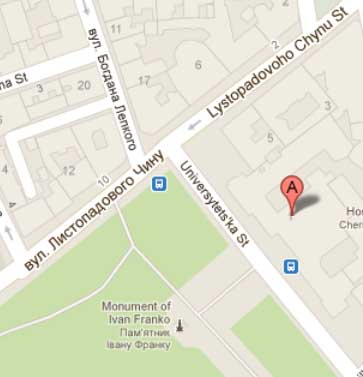

Як нас знайти
Привіт!
Вас вітає коледж алгоритмічного програмування. Це перша в Україні школа мистецтва розв’язування алгоритмічно складних задач.
Відвідати Коледж можуть всі бажаючі, починаючи від школярів і студентів та закінчуючи досвідченими програмістами.
Лекційні заняття коледжу проходять у головному корпусі університету імені Івана Франка (м. Львів, вул. Університетська 1).